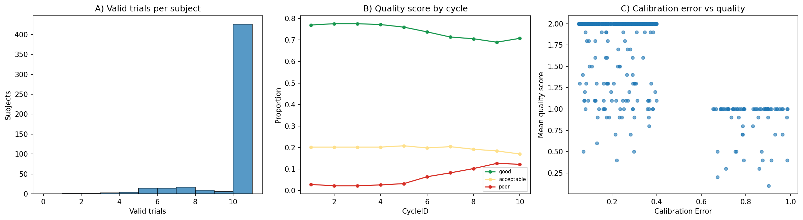
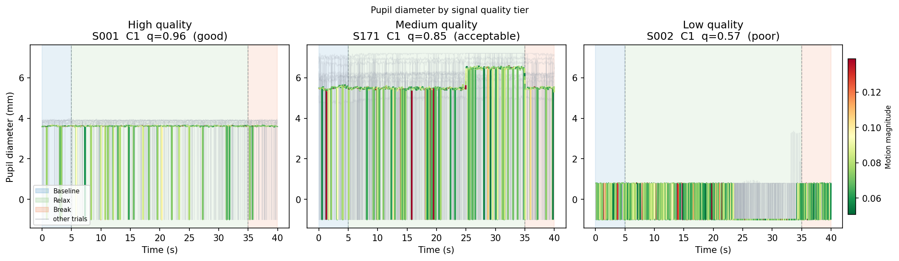
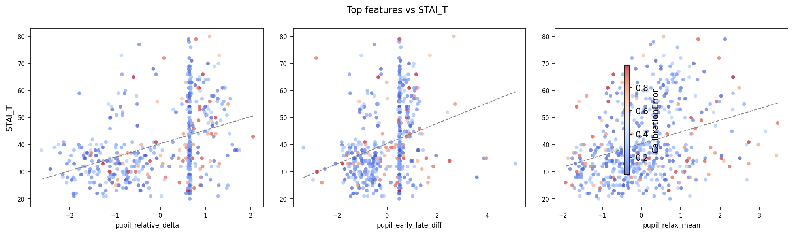
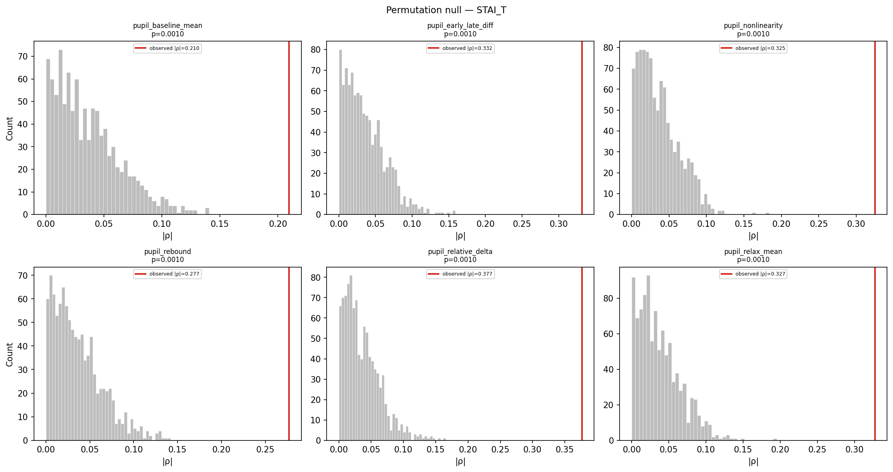
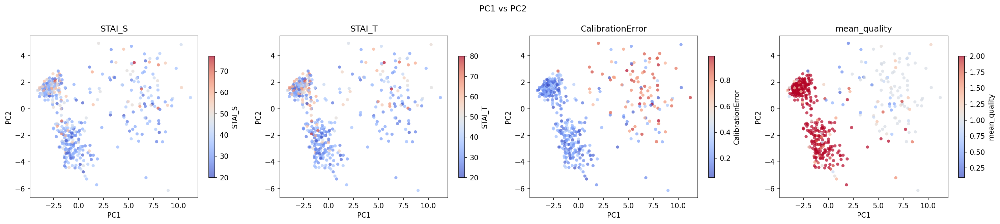
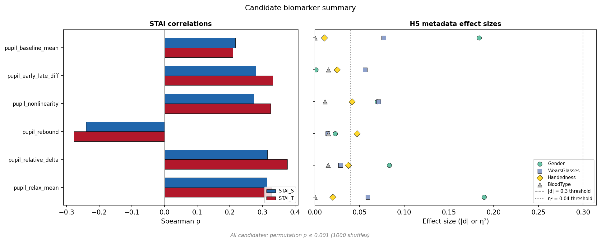
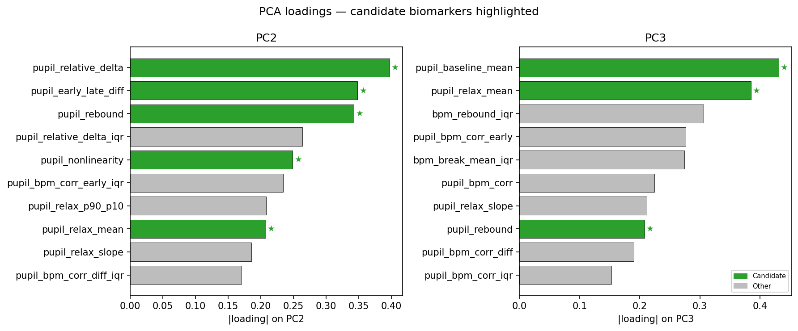

Home Assignment Presentation
2026-04-21
The Core Question: Can a 40-second VR trial produce physiological signals reliable enough to serve as sensitive state biomarkers?
Reproducible Pipeline
Signal validation, missing data masking, and trial quality scoring.
Physiological Features
Candidate engineering & unsupervised dimensionality reduction (PCA).
Sensitivity & Scaling
Proving robustness against confounds and preparing the architecture for API integration.
Physiological signals should change systematically from baseline to relaxation.
Baseline-normalised features should capture the task better than raw levels alone.
Pupil, heart-rate, and gaze-derived features should relate to STAI_S and STAI_T.
Good biomarkers should survive quality/confound checks rather than only correlate once.
Features strongly driven by demographics or acquisition context are weaker candidates.
The heavy methodological effort goes into H4: demonstrating robustness, not only ranking features.
Non-missing, physiologically plausible (2–8 mm), and within median ± k·MAD.
PPG sample retained only when signal-quality index exceeds threshold.
Non-missing gaze without abrupt velocity jumps, again using a MAD-based rule.
High motion invalidates all sensors, so the motion mask gates the modality masks.
\[ q = 0.4 \cdot r_{pupil} + 0.4 \cdot r_{bpm} + 0.2 \cdot r_{gaze} \]
where each \(r\) is the valid-sample ratio for that modality within a trial.


10/10 valid trials
Mean Quality Score: 2.0
7/10 valid trials
Mean Quality Score: 1.2
0/10 valid trials
Mean Quality Score: N/A
Baseline mean and relax mean capture sustained pupil level, linked to tonic arousal.
Delta and rebound capture how strongly the signal changes and how it recovers.
Nonlinearity and early-vs-late difference capture adaptation across the 30 s relax window.
Within-trial spread and later subject-level IQR quantify instability, not just level.
Pupil-BPM and related features were tested, but ultimately did not survive as candidates.
Each stage rejects a different failure mode — not a re-test of the same effect.

pupil_relative_delta, \(\rho \approx 0.38\) with STAI_T
All six candidates clear \(p \le 0.001\) against a 1000-shuffle null — no parametric assumptions.

System Artifacts
Appears to be driven by hardware calibration and data quality.
Clinical Signal
Likely isolates the primary physiological axis reflecting STAI.
Residuals
Possibly secondary, independent physiological responses.

Six surviving candidates, all pupil-derived, grouped into tonic arousal, phasic response/recovery, and temporal adaptation.
(Baseline States)
pupil_baseline_meanpupil_relax_meanReflects overall resting stress levels, driven by the LC-NE pathway.
(Event Responses)
pupil_relative_deltapupil_reboundCaptures the magnitude of the reaction to relaxation, and the ability to return to baseline.
(Adaptation over Time)
pupil_nonlinearitypupil_early_late_diffTracks competing autonomic drives (sympathetic vs parasympathetic) over the 30s window.

Same 6 candidates from univariate ranking dominate the two PCs.
Loadings spread across PC2 and PC3, two supporting factors.
PCA acts as an independent structural confirmation tool.
main.py
analysis.ipynb
constants.py
Intentionally lightweight: pandas, scipy, scikit-learn — no deep-learning dependencies. The pipeline is auditable, portable, and easy to freeze for regulated release.
Seamless Translation: Steps 3 & 4 use src/pipeline.py. My focus as a Data Scientist is ensuring deployed logic matches offline validation, while leveraging tools I know to help bridge the MLOps gap.
New data improves the system through controlled reprocessing and versioned model updates — never silent changes to a deployed version.
Single-feature ρ ≈ 0.4 against a self-report target is at the upper end of what is typical. Honest scope, not a flaw to fix.
VR PPG is motion-sensitive; cardiac features did not survive robustness checks. Better optical placement or ECG would change this.
Next step: elastic-net regression with nested cross-validation to build a parsimonious multivariate index and honest generalisation estimates.
Trial 1 differs from trial 10 as subjects acclimate. A mixed-effects model with trial index would isolate this variance.
Density-based clustering (HDBSCAN) or hierarchical clustering could reveal physiological responder subtypes without forcing artificial partitions on a continuous distribution.
The frozen z-score params are designed for incremental scoring. They need a held-out cohort to confirm generalisation.
Six validated pupil biomarkers. A pipeline that is already separable, traceable, and deployable. The process discipline to carry it into a regulated product.
Time allocation · 1.5 h pipeline · 1 h features · 1 h PCA & selection · 1 h report = 4.5 h total